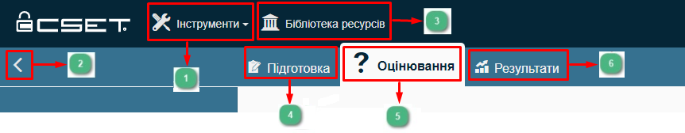
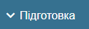

Підготовка є першою частиною процесу оцінювання і включає збір наступної інформації, яка відображається:
•у полях для збору інформації про користувача у формі Конфігурація оцінювання на вкладці Підготовка;
•у полях форми Інформація про оцінювання, де збирається і відображається інформація, що містить відомості про демографічні показники (наприклад, сектор економіки та галузь, період проведення оцінки, назву організації контактної особи, бізнес-одиниця (підрозділ) компанії та/або установа і таке інше);
•поля решта екранних форм вкладки Підготовка для проведення оцінювання.
Форма Конфігурація оцінювання на вкладці Підготовка
Збирається інформація про організацію користувача для оцінювання та повідомленням про тип оцінювання.
{kind=link}
Рис.1. Форма Конфігурація оцінювання
Форма Інформація про оцінювання на вкладці Підготовка
Відображається контактна інформація, а також інформація, що містить відомості про демографічні показники (наприклад, сектор економіки та галузь, період проведення оцінки, назву організації контактної особи, бізнес-одиниця (підрозділ) компанії та/або установа і таке інше).
{kind=link}
Рис.2. Форма Інформація про оцінювання
Вибір Рівня безпеки на вкладці Підготовка
Рівень безпеки (Security Assurance Level, SAL) визначає кількість запитань, на які потрібно надати відповіді, та рівень ретельності оцінювання.
Наприклад, для типового високого SAL потрібно надати відповіді на 350-1000 запитань, тоді як для низького SAL - на 30-350 запитань, залежно від вибраного стандарту.
Рівень складності застосовується до наборів запитань стандартного компонента та компонента діаграми.
Поточний рівень безпеки визначаються наступним чином:
•В цілому
•Конфіденційність. Втрата конфіденційності - це несанкціоноване розголошення інформації. Це значення пов'язане з важливістю захисту інформації від несанкціонованого доступу. Чим важливіше є питання ненадання доступу до інформації несанкціонованим користувачам, тим вищий ваш рівень SAL.
•Цілісність. Втрата цілісності - це несанкціонована модифікація або знищення інформації. Це значення пов'язане з важливістю точності інформації. Чим важливіше є питання стосовно того, чи є інформація послідовною, точною і змінюється лише уповноваженими особами, тим вищий ваш рівень SAL.
•Доступність. Втрата доступності - це порушення доступу або використання інформації чи інформаційної системи. Це значення пов'язане з важливістю того, щоб інформація була легкодоступною. Чим важливіше мати доступ до інформації, тим вищий ваш рівень SAL.
CSF передбачені наступні рівні потенційного впливу для кожної з наведених вище сутностей (цілей):
•Низький / Low - можна очікувати, що втрата конфіденційності, цілісності або доступності матиме обмежений негативний вплив на діяльність організації, активи організації або окремих осіб.
•Помірний / Moderate - можна очікувати, що втрата конфіденційності, цілісності або доступності матиме серйозний негативний вплив на діяльність організації, активи організації або окремих осіб.
•Високий / High - можна очікувати, що втрата конфіденційності, цілісності або доступності матиме серйозний або катастрофічний негативний вплив на діяльність організації, активи організації або окремих осіб.
CSET також надає дуже високий рівень (Very high) для тих випадків, коли в систему включені всі засоби контролю і всі додаткові засоби підвищення безпеки, описані в спеціальній публікації.
{kind=link}
Виберіть одну з трьох методологій SAL, наведених нижче, для визначення загального рівня безпеки системи, що оцінюється.
{kind=link}
Для визначення загального рівня впливу на втрату конфіденційності, цілісності або доступності є наступні три кроки:
Першим кроком є вибір з наданого переліку одного або декількох типів інформації на основі інформації, яка зберігається, обробляється, вводиться або виводиться з систем, що оцінюються. Вибір повинен бути обмежений одним або декількома "первинними" типами інформації. В подальшому CSET заповнить цілі безпеки призначеними рівнями. Наприклад, для типу інформації "Управління енергетичними ресурсами" ("Energy Resource Management") присвоєння рівнів виглядає наступним чином: •Конфіденційність => Помірний •Цілісність => Низький •Доступність => Низький Якщо вибрано більше одного типу, то рівень у кожній категорії є найвищим із сукупності. Наприклад, якщо вибрано три типи інформації і в категорії цілісності присвоєно низький, помірний, високий рівень, то загальний рівень цілісності є високим. |
{kind=link}
Другий крок - відповісти на короткий набір запитань, які стосуються інформаційної системи в цілому. Ствердна відповідь на ці запитання призведе до підвищення рівня безпеки в одній або декількох цілях безпеки. |
{kind=link}
Особливі фактори - це винятки з попереднього розподілу впливу за типами інформації. Якщо для вибраного типу інформації наявний спеціальний фактор, рівень впливу буде показано синім кольором. Натиснувши на синє посилання, ви побачите текст регуляторного акта у полі спеціальних факторів. Текст слід ретельно переглянути та відредагувати, щоб він відображав реальну систему, яка розглядається.
|
{kind=link}
Після завершення цих трьох кроків перегляньте та відкоригуйте рекомендований рівень впливу для кожної з трьох цілей безпеки, щоб найкращим чином відобразити унікальні обставини, пов'язані з оцінюваною системою.
підготовлено у редакторі Help & Manual 9.3.0